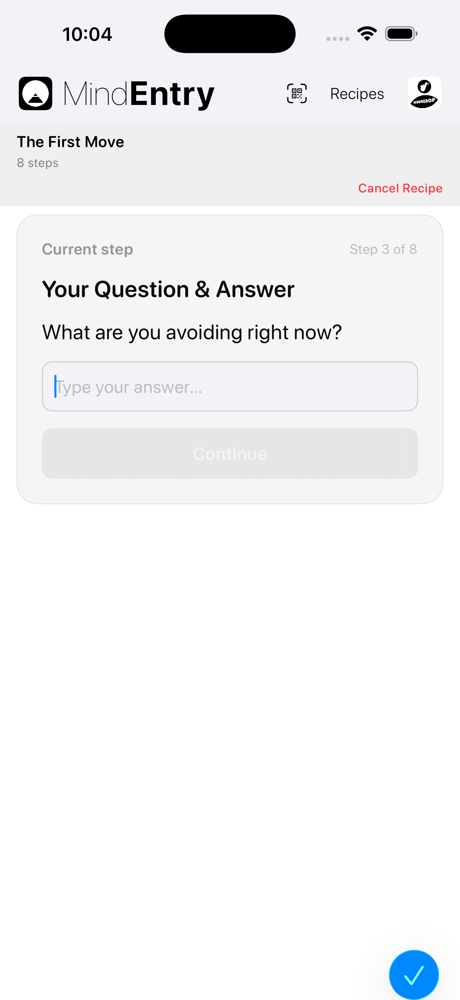

You know what to do. But starting feels weirdly unavailable.
MindEntry is the central entry point for MINDBEBOP. It routes thoughts, Mental Steps, and app-to-app movement throughout the system.
Not a chat app. Not a journal. Not a coaching layer.
A simple entry point for routing mental friction — looping thoughts, unfinished tasks, overload, or role pressure — to the right place.
All processing stays on your device. MINDBEBOP does not collect or transmit your thought content.


MindEntry is where Mental Navigation begins.
When you're at Point A, Mental Steps can help you move toward your Point B.
Your Point B is up to you. It may be starting, calming down, focusing, letting go, resting, or returning to what matters.
Point A
↓
Mental Steps
↓
Point B
Point B is chosen by you. It may be focus, calm, starting, stopping, resting, or returning to what matters.
Some moments need more than one step.
MindEntry lets you create, run, share, import, and reuse short Mental Steps across MINDBEBOP apps.
Mental Steps can include custom steps, instructions, QR Mental Steps cards, and compact MER1 import text.
Free users can create, edit, share, import, and run Mental Steps manually. MINDBEBOP Access unlocks expanded organization and automation features.
Hallway Mode is a quieter way to move through Mental Steps.
Instead of showing each step directly, it places a calm spatial pause between steps: move forward, find the next door, open it, continue.
The Mental Steps stay the same. Only the way you move through it changes.
Some Mental Steps can adapt while they run.
They can ask what matters right now, then use your answer inside the active sequence.
This allows one set of Mental Steps to work across different moments without becoming a different set of Mental Steps.
Runtime answers stay on your device and are not written back into the Mental Steps itself.
The First Move is a set of Mental Steps for moments when you know what needs to be done but cannot begin.
It helps narrow attention until only the next visible step remains.
The goal is not task completion. The goal is movement.
The First Move is used across MINDBEBOP, including returned thoughts from MindShoutOut and First Move Unlock sessions in MindBackOut.
Compatible Mental Steps can be protected using MindBackOut.
When protected Mental Steps starts, selected apps can be locked while the Mental Steps are running. When the Mental Steps are completed, those apps unlock automatically.
Mental Steps Protection is configured at the Mental Steps level, so each compatible Mental Steps can have its own protection setting.
Mental Steps Protection requires MindBackOut. It is designed to protect the sequence, not to turn MindEntry into a productivity or task management app.
MindBlank is a passive reflection of the time your mind stayed quiet after using MINDBEBOP.
It is not a score, streak, diagnosis, or performance metric.
It simply reflects the quiet interval when unresolved loops were not asking for your attention.
Blank Map adds a simple visual layer for MindBlank time. Only MindBlank time is known. Everything else remains visual noise.
MindBlank is hidden while Mental Steps are actively running, so the current step stays in focus.
MindPreCog helps MindEntry appear at moments when background thoughts are likely to return.
It can use morning, bedtime, weekly, or event-based prompts to open MindEntry or another MINDBEBOP tool.
Calendar-based prompts can also open MindZoneOut before meetings, work sessions, or social situations.
MindPreCog is not prediction or analysis. It is a lightweight prompt system.
If available on your device, MindEntry may use Apple’s on-device language models to help classify text or generate lightweight Mental Steps explanations.
This processing stays entirely on-device and is not sent to MINDBEBOP or third parties.
MindEntry works together with other MINDBEBOP apps already installed on your device.
If a required app is not installed, MindEntry guides you to install it.
MindEntry is free to use for creating, editing, sharing, importing, and manually running Mental Steps.
MINDBEBOP Access unlocks expanded Mental Steps storage, organization, scheduling, multi-run, recent history, Mind Detox Mental Steps, and supported AI-assisted routing.
MindEntry supports the MindEvent API for securely receiving real-world events through authenticated webhooks.
Learn about the MindEvent API →
MindEntry was designed to help you navigate thoughts, not collect them.
Mental Steps, MindAnchors, notes, and other information remain on your device unless you explicitly choose to share them.
MINDBEBOP does not build behavioral profiles, analyze your thoughts, or use your private data to train external systems.
Your mind belongs to you.
Copyright © 2026 MINDBEBOP — All rights reserved.